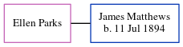

Ellen Parks, the wife of James Charles Matthews (the second cousin twice-removed on the father's side of Nigel Horne), and married James (a mariner) in Thanet, Kent, England around Aug 19211.
Citations
England & Wales Marriages 1837-2005 - Findmypast
Family Tree

Generated by ged2site. Last updated on Jun 11, 2024